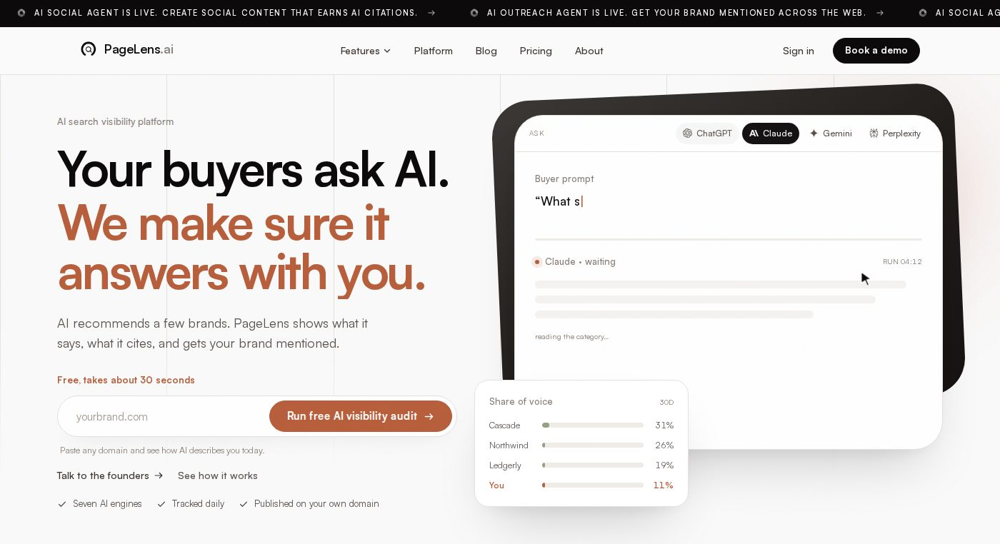

PageLens Review: The AI Search Platform That Doesn't Just Track Your Visibility — It Fixes It
While most tools stop at telling you that ChatGPT and Gemini left your brand out of the answer, PageLens tracks the gap, writes the page built to close it, publishes it to your own domain, and pitches the sources AI already trusts — closing the loop instead of just charting it.

The way buyers research has quietly changed: they're not scanning ten blue links anymore, they're asking ChatGPT, Claude, Gemini, and Perplexity a direct question and trusting whichever two or three brands the model names back. PageLens is built specifically for that shift. It tracks daily across seven answer engines, shows exactly which sources each AI answer was built from, writes and publishes the content needed to win those citations back onto the brand's own domain, and even runs outreach to the sites those models already trust — a genuinely complete loop rather than another dashboard that just confirms a brand is losing.
PageLens.ai rating breakdown
| Factor | Rating | Why |
|---|---|---|
| Depth of tracking | 4.8/5 | Daily monitoring across ChatGPT, Claude, Gemini, Perplexity, Google AI Mode, Grok, and Copilot — visibility, sentiment, and citation sources in one view. |
| Actionability | 4.8/5 | Doesn't stop at reporting — writes and publishes the exact content needed to win a citation, on the brand's own domain. |
| Breadth of the loop | 4.7/5 | A genuine four-stage system — Listen, Create, Publish, Learn — plus an AI Outreach Agent that pitches the sources models already cite. |
| Value for the depth offered | 4.5/5 | Tiered pricing from a $299/mo Launch plan up to Agency-level multi-client workspaces, with unlimited users on every plan. |
B2B SaaS, D2C, and service brands that already know rankings and backlinks aren't the whole picture anymore, and want a single platform that tracks how AI describes them, fixes the content gap, and measures whether the citation actually changes.
What Is PageLens?
PageLens is an AI search visibility platform built around a simple but increasingly urgent idea: search has become discovery by answer. A buyer no longer scans a results page — they ask a model a question and trust whichever brands it names inside a single response. PageLens calls this shift AEO, or Answer Engine Optimization, and its entire platform is designed around winning it.
The site puts the mission plainly: PageLens isn't building another marketing tool, it's building the operating system for organic growth in the age of AI — helping brands be found wherever decisions now happen, from ChatGPT and Google AI Overviews to Perplexity, Claude, Reddit, LinkedIn, and comparison sites. It's already trusted by over 100 brands globally, spanning B2B SaaS, manufacturing, D2C, ecommerce, education, and services.
How It Works: The Four-Stage Loop
What sets PageLens apart from a typical AI rank tracker is that it doesn't stop at telling a brand it's absent — it closes the loop. The platform runs on a repeating four-stage cycle:
Listen
Every answer, every engine, tracked daily. PageLens runs the buyer prompts a brand's prospects actually use across ChatGPT, Claude, Gemini, and Perplexity, and shows how often the brand is named, who's named instead, and which sources each answer was built from.
Create
PageLens identifies the exact passage a model is missing and writes the content designed to fill that specific gap, rather than generic SEO copy.
Publish
The content ships live on the brand's own domain, not a PageLens-branded subdomain. That distinction matters: the compounding SEO equity stays with the brand paying for it, and the pages are structured, headed, and schema-tuned exactly the way models read a page.
Learn
Visibility isn't treated as a static setting. PageLens measures whether a published page actually earns a citation, then feeds that back into what gets created next — closing the loop rather than just charting the gap.
What You Actually See: The Platform
Once running, PageLens surfaces four core views that turn "we might be losing ground in AI search" into a specific, measurable picture:
Visibility and share of voice
Tracked daily and split against every competitor the model names, so a brand can see not just its own score but exactly how it stacks up category-wide.
Brand sentiment
A breakdown of the actual adjectives each model reaches for when describing a brand (reliable, well documented, enterprise-grade, and so on), split positive, neutral, and negative.
Citation sources
A citation graph showing exactly which pages an AI answer was built from and who is winning that citation battle, whether that's Reddit, G2, a competitor's blog, or the brand's own site.
Human and AI crawler traffic
Live tracking of both human sessions and AI crawler activity (GPTBot, ClaudeBot, Google-Extended, and others) hitting a brand's pages, alongside Search Console data, all in one view.
PageLens's newest capability, the AI Outreach Agent, extends the loop a step further: getting a brand mentioned on the very sites AI models already trust and cite. It identifies outreach targets directly from citation data — sources the model is already quoting in a brand's category — and writes one researched pitch a day, built from that publication's recent work rather than a generic mail-merge template. Every pitch is queued for review, and the brand approves each send (or can switch to draft-only mode and send them personally), keeping a human in the loop on brand-sensitive outreach while PageLens does the research and drafting.
What Customers Are Saying
PageLens's own site testimonials paint a consistent picture: teams that were flying blind on AI visibility, and are now not just measuring it but actively fixing it.
"We were getting cited everywhere except ChatGPT. PageLens showed us the exact content gaps we needed to fill." — David K., Senior SEO Consultant
"Started tracking one brand, now we run it across five. The share-of-voice view is unmatched by anything else we tried." — Robert T., Head of Growth
"Our brand disappeared from Gemini completely. PageLens helped us figure out exactly why, and what to publish about it." — Julia R., Content Strategy Lead
"We rewrote two pages off their briefs and got back into Perplexity within two weeks. Never seen results move that fast from content." — Martin G., SEO Manager
"Claude and ChatGPT had stopped citing us. PageLens gave us page-level changes that brought those mentions back." — Tania I., Digital Marketing Consultant
"The /feed pages started earning citations in the first month, on our own domain, which was the whole point." — Petra M., VP Marketing
"The daily runs caught a competitor overtaking us on the 'best of' prompts before it showed up anywhere else." — Marion L., Agency Founder
Pricing
PageLens is structured to let a brand start at the depth it needs and move up as the investment pays off, with unlimited users included on every plan. Launch, at $299/mo, is for understanding where a brand is recommended and where competitors are winning: 100 tracked prompts weekly, 300 AI answers analyzed per week, 25 content pieces per month, and full competitor, citation, sentiment, and share-of-voice reporting through the Prompt Research, Content Brain, and proprietary CMS.
Growth, at $699/mo and marked Most Popular, is for actively creating and publishing content to grow visibility, citations, and recommendations: 100 tracked prompts daily, 500 AI answers analyzed per day, 50 content pieces per month, plus everything in Launch along with UGC recommendations, Web 2.0 publishing, latest-news content, MCP, and technical recommendations. Enterprise, at $1,499/mo, is for building a category-leading AI search presence with deeper tracking and execution: 200 tracked prompts daily, 1,400 AI answers analyzed per day, and 100 content pieces per month, with everything in the plans below it.
Agency is custom-priced, built for agencies managing multiple client websites from one workspace, with a shared prompt pool, custom coverage and cadence, white-label hosted publishing for client delivery, every engine and content format PageLens supports, and a dedicated onboarding and account manager. Every plan tracks across the same seven answer engines — ChatGPT, Google AI Mode, Perplexity, Gemini, Grok, Claude, and Copilot — so the difference between tiers is depth of coverage and execution, not which AI surfaces get monitored.
Where PageLens Falls Short
No review is complete without the caveats. PageLens's testimonials are published on its own site rather than sourced from an independent review platform, and the company doesn't yet have a visible G2 or Capterra listing to cross-check satisfaction at scale — treat the on-site quotes as directionally useful rather than independently verified. The jump from the $299/mo Launch plan to the $699/mo Growth plan is significant, and Launch's weekly tracking cadence (100 prompts, 300 answers analyzed) is noticeably lighter than Growth's daily runs, so a brand serious about closing citation gaps quickly will likely need to budget for Growth rather than starting on Launch. Agency pricing isn't published and requires a sales conversation, and — like most AEO tools this early in the category's life — PageLens is still a young platform without the years of track record that come with more established SEO tooling.
Frequently asked questions
What is AI search visibility?
It measures how often and how favorably AI answer engines mention a brand when buyers ask questions in its category — measured by mentions, share of voice, and citations rather than by position on a results page.
What is the difference between SEO and AEO?
SEO optimizes for a ranked list of links, where being tenth still earns a click. AEO optimizes for being one of the two or three brands an AI names inside a single answer. They overlap on technical fundamentals and differ completely on measurement.
How do I check if ChatGPT recommends my brand?
Run a free AI visibility audit with your domain. PageLens runs the buyer prompts your prospects use across ChatGPT, Claude, Gemini, and Perplexity, then shows how often you're named, who's named instead, and which sources each answer was built from.
How is PageLens different from an AI rank tracker?
Trackers tell you that you're absent. PageLens tells you which source won the citation, writes the page built to beat it, publishes it to your own domain, pitches the sites the models trust, and measures whether the answer actually changes.
PageLens is built for a shift most brands are only now starting to feel: buyers asking AI a direct question instead of scanning a search results page, and the brand that gets named in that answer winning the customer that a ranked link would have missed entirely. What separates PageLens from a simple AI rank tracker is that it doesn't stop at the bad news — it identifies the exact content gap, writes and publishes the page built to close it on the brand's own domain, pitches the sources AI already trusts, and measures whether the citation actually comes back. For any brand that already knows rankings and backlinks aren't the whole picture anymore, PageLens offers a genuinely complete system for winning the answer, not just tracking it.
More brand reviews
Try PageLens.ai yourself
B2B SaaS, D2C, and service brands that already know rankings and backlinks aren't the whole picture anymore, and want a single platform that tracks how AI describes them, fixes the content gap, and measures whether the citation actually changes.
Visit PageLens.ai →See the full PageLens.ai listing on ToolScout, including pricing and alternatives.